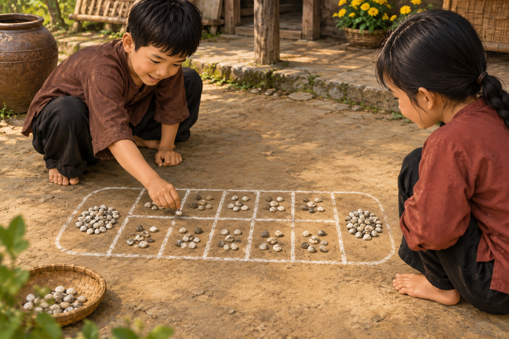
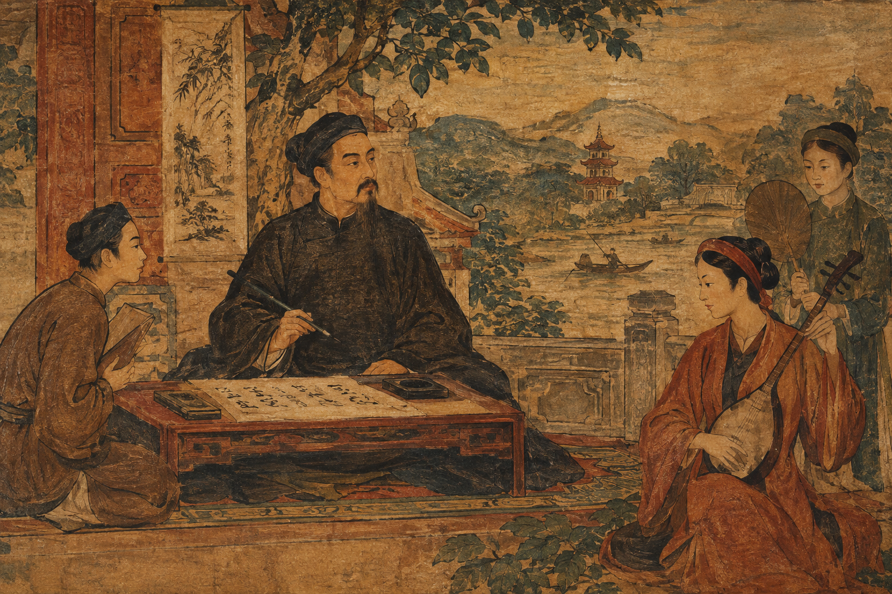

Lưu giữ giá trị văn hóa
Giới thiệu những tác phẩm, nhân vật và câu chuyện có giá trị trong lịch sử nghệ thuật Việt Nam.
Lịch sử trong từng nét vẽ
VIỆT NAM QUA NGHỆ THUẬT
Khám phá hành trình ngàn năm văn hiến Việt Nam qua những kiệt tác nghệ thuật đặc sắc.
“Mỗi tác phẩm nghệ thuật
là một trang sử,
mỗi nét vẽ là một lời kể
về dân tộc.”
GIỚI THIỆU
Nét Việt là một không gian trực tuyến dành cho những người yêu thích lịch sử, nghệ thuật và văn hóa Việt Nam.
Chúng tôi mong muốn đưa những câu chuyện lịch sử đến gần hơn với mọi người thông qua hội họa, kiến trúc, điêu khắc và nghệ thuật dân gian.
Mỗi tác phẩm không chỉ mang giá trị nghệ thuật mà còn lưu giữ những dấu ấn của một thời kỳ, một con người và một phần ký ức của dân tộc.
CHÚNG TÔI LÀM GÌ
Kết nối lịch sử với nghệ thuật bằng một cách gần gũi, trực quan và dễ tiếp cận.
Giới thiệu những tác phẩm, nhân vật và câu chuyện có giá trị trong lịch sử nghệ thuật Việt Nam.
Giúp người xem hiểu lịch sử thông qua hình ảnh, tác phẩm nghệ thuật và những câu chuyện giàu cảm xúc.
Góp phần khơi dậy sự quan tâm và tình yêu đối với lịch sử, văn hóa và nghệ thuật của dân tộc.
CÂU CHUYỆN
Lịch sử không chỉ nằm trong những trang sách. Lịch sử còn hiện diện trong những công trình, bức tranh, pho tượng, trang phục và những nét văn hóa được lưu truyền qua nhiều thế hệ.
Nét Việt được xây dựng với mong muốn tạo ra một nơi để mọi người có thể khám phá những giá trị ấy theo một cách trực quan và sinh động.

THÔNG ĐIỆP
“Mỗi tác phẩm nghệ thuật là một trang sử, mỗi nét vẽ là một lời kể về dân tộc.”
Nét Việt — Lịch sử trong từng nét vẽ
KHÁM PHÁ
Khám phá những câu chuyện và tác phẩm đặc sắc của văn hóa Việt Nam.

Khám phá những tác phẩm nghệ thuật tiêu biểu của Việt Nam.
Khám phá →Tìm hiểu về những con người có dấu ấn trong lịch sử Việt Nam.
Khám phá →Lắng nghe những câu chuyện phía sau lịch sử và nghệ thuật.
Khám phá →